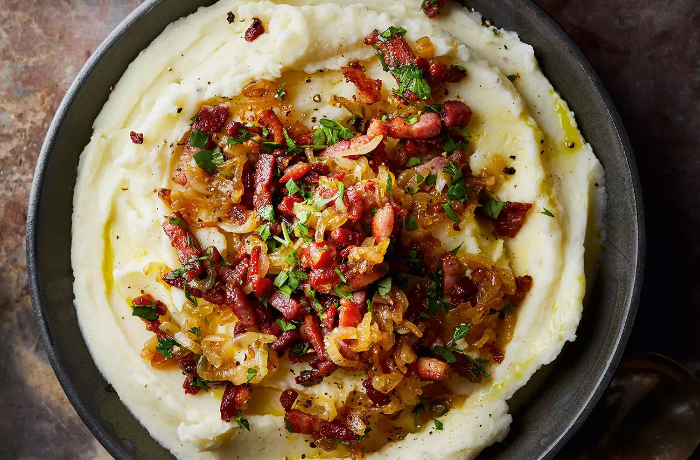

Danish burning love (potato mash with lardons & onions)
Burning Love Mashed Potatoes is an old Danish dish that uses simple ingredients: potatoes,
milk, bacon, and onions, and transforms them into something amazing. These loaded
mashed potatoes are a perfect main dish or decadent side.
- 3 Borettane onions
- 3 tsbp rapeseed oil (or what ever you prefer)
- 20g butter
- 800g Potatoes, peeled and cut into chunks
- 50ml Milk
- 125g unsmoked lardons
- 1/2 tsbp parsley
Instructions
- Deal with the onions first, so they’re ready to go on the mash, by halving and
finely slicing them. Heat the oil in a heavy-based pan and add the onions. Cook over
a medium heat (lower it as you need to), stirring occasionally, for 20 minutes until
the onions are pale gold and beginning to soften
- Add a couple of large pinches of salt – this helps the onions sweat – 5g of the
butter and 3 tbsp water, then turn the heat right down. Cover and sweat the onions
for 30 minutes, checking occasionally to make sure there is enough moisture and the
onions aren’t burning on the bottom. When the onions are soft, remove the lid, turn
the heat right up and cook until all the moisture has evaporated.
- Boil the potatoes until tender, then drain. Put them back in the saucepan,
crumple a clean tea towel on top of them and cover with a lid. Set on a very low
heat for 3-4 minutes to dry out – this makes better mash (don’t burn the potatoes,
though).
- Mash the potatoes with the hot milk, the remaining butter and seasoning. Taste.
Cover to keep warm.
- Put the bacon lardons into a hot pan and cook briskly in the fat which runs out
of them as they heat, until the lardons are golden all over and cooked through.
Toss in the parsley. Quickly reheat the onions. Put the mash into a warm bowl.
Scatter the onions on top, then the lardons. Serve immediately.